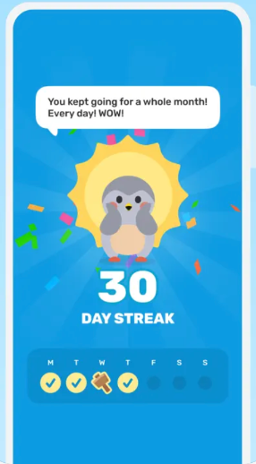

W10 · DAY 3 · 揭晓时刻
孵化仪式
页面目标：把「生成画像」变成被期待、被记住的时刻，而不是一次加载。
1
全屏沉浸：隐藏标签栏，深色背景，只保留一个动作。第 3 天最后一项录入后自动进入。
2
三色光点汇入花苞，提前告诉用户画像的三个维度，衔接 W11。
3
长按 2 秒：进度环随按压填满，裂纹扩大；中途松手进度回退，防止误触。
4
多模态 · 手势 + 震动 + 声音 按压期间手机与手表同步「心跳」震动并逐渐加强；孵化瞬间一次强震并配短音效，静音模式只震动。这是全流程最强的触觉时刻。
无障碍：提供「点按孵化」替代长按，读屏播报进度。画像在后台计算，仪式时长覆盖计算时间。

参考：Finch 用全屏单色背景 + 角色 + 大数字承载里程碑时刻。